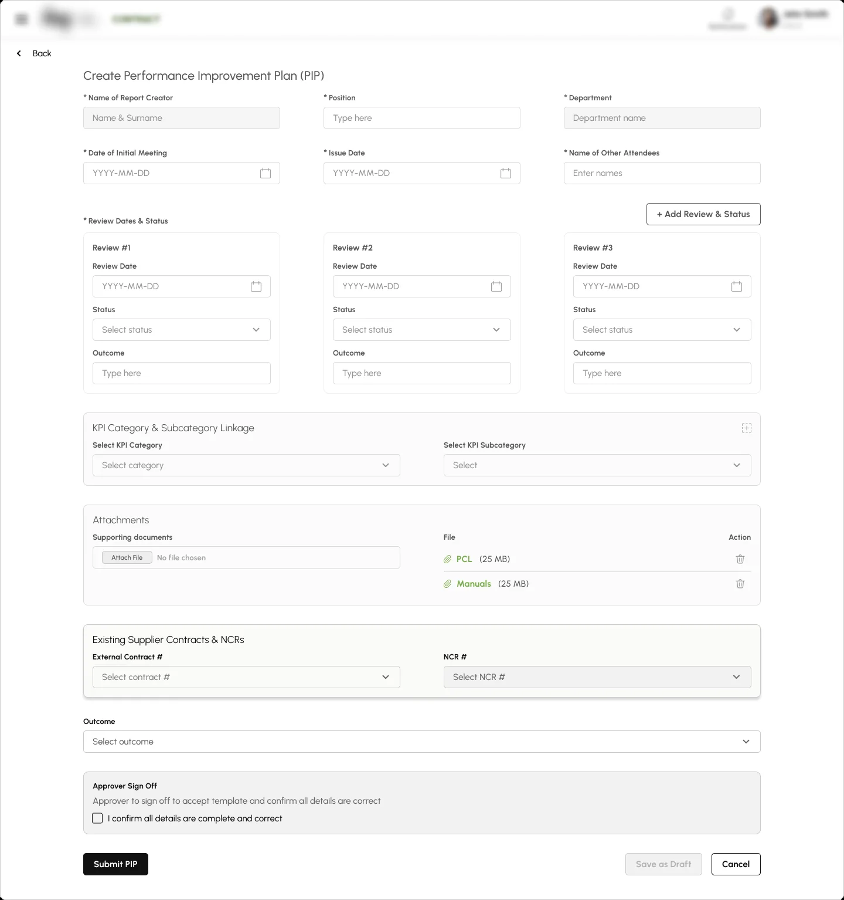
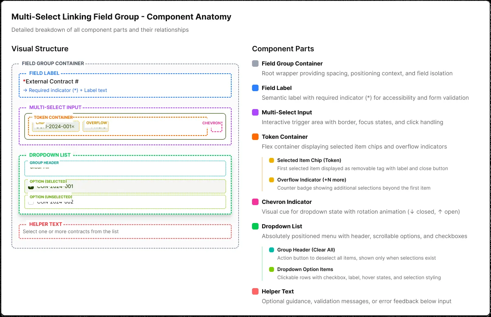
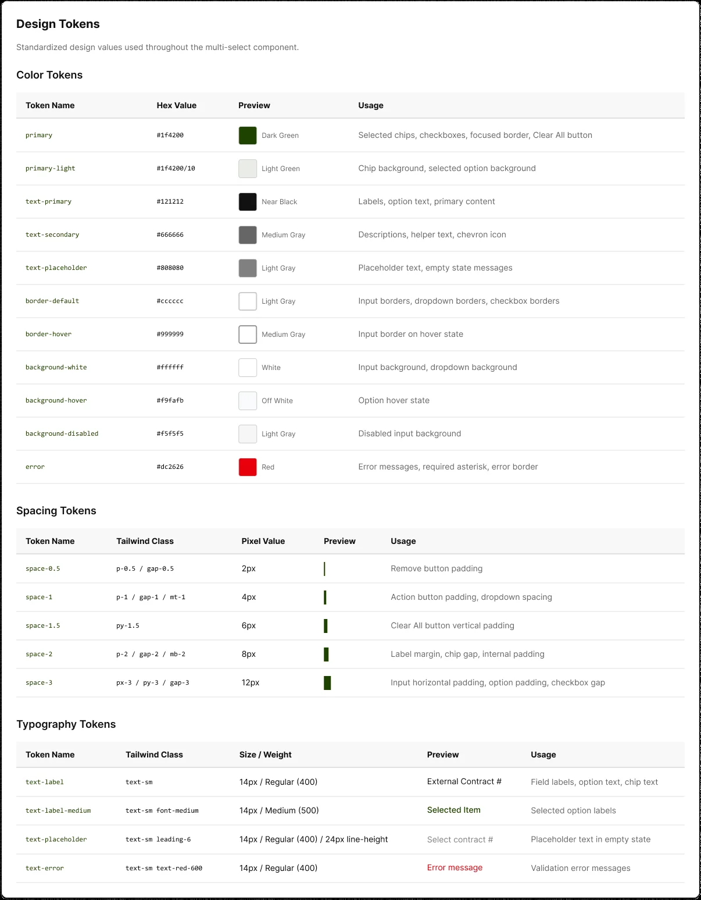

A multi-select for linking contracts and NCRs
Designing a scalable multi-entity selection and linking pattern for enterprise workflows.
- Role
- Product designer
- Type
- Design system component
- Used in
- Performance Improvement Plan form
- Date
- April 2026
Overview
The Performance Improvement Plan (PIP) form is used to document and manage performance issues by linking them to relevant external contracts and related non-conformance records (NCRs). Within this workflow, users are required to accurately associate contractual references and compliance issues to ensure traceability, accountability, and consistent reporting. The External Contract and NCR fields play a critical role in maintaining data integrity, as incorrect or missing associations can lead to reporting gaps and operational risks.

Try the component
This is a working version, built for this page. Search, select several records, remove them with the keyboard or mouse, and switch between states. The records are sample data.
Keys: type to filter, Arrow keys to move, Enter to select, Backspace to remove the last item, Escape to close.
Component Anatomy
The multi-select field group was designed as a reusable system component to support consistent selection and linking patterns across multiple workflows. Its anatomy includes a clear label, selection container, selected item tokens, overflow handling, helper and error messaging, and a structured dropdown list, enabling users to review and manage multiple selections efficiently. By defining each element of the component explicitly, the design ensures predictable behavior, easier reuse across different contexts, and alignment between design and development as the product scales.

States & Design Tokens
The multi-select component was designed with clearly defined interaction states to guide users through complex selections and reduce errors during form completion. Visual feedback across default, selected, disabled, and error states helps users understand system expectations and prevents invalid submissions. Design tokens ensure these states remain consistent across the product, enabling faster implementation, easier maintenance, and a reliable user experience as workflows and requirements evolve.
